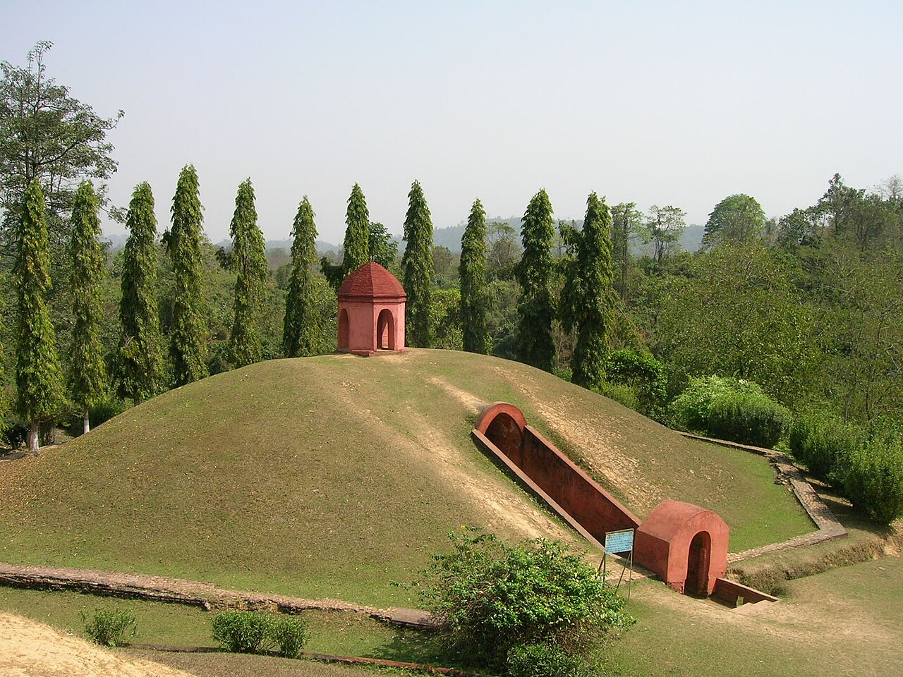

এইটো
পাহাৰ নহয়।
This is not a hill.
আহোম ৰজাৰ
মৈদামৰ ৰেচিপি
ৰেচিপি · ০০৩
ক'ত
চৰাইদেউ
কাৰ বাবে
আহোম ৰজা
মৈদাম
৯০ টা
ইউনেস্কো
২০২৪
Moidams: the royal burial mounds of the Ahom kings.
মাটিৰ তলত
ইটাৰ কোঠা
ভিতৰত ৰজা
আৰু তেওঁৰ বস্তু
ওপৰত
মাটিৰ স্তূপ
চূড়াত
চৌ-চালি
চাৰিওফালে
আঠকোণীয়া গড়
এতিয়া পাহাৰ
যেন লাগে!
চৰাইদেউ মৈদাম
Charaideo, Assam · real photo

চৌ-চালি
Photo: Mozzworld, Wikimedia Commons, CC BY-SA 4.0
০
টা মৈদাম
ইউনেস্কো বিশ্ব ঐতিহ্য · ২০২৪
ভিতৰত
এজন ৰজা।
এইটো
পাহাৰ নহয়।
Inside: a king.
আহোমৰ ৰেচিপি · ০০৩